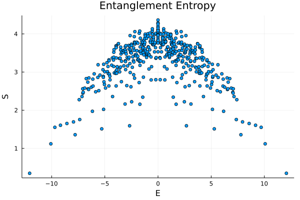

XXZ Model with Random Field
Consider the Hamiltonian
\[H = \sum_i\left(\sigma_i^x \sigma^x_{i+1} + \sigma^y_i\sigma^y_{i+1} + h_i \sigma^z_i\sigma^z_{i+1}\right).\]
We choose the system size to be $L=10$. The Hamiltonian need 3 generic information:
- Local operators represented by matrices;
- Site indices where each local operator acts on;
- Basis, if use the default tensor-product basis, only need to provide the system size.
The following script generate the information we need to generate XXZ Hamiltonian:
L = 10
mats = [
fill(spin("XX"), L);
fill(spin("YY"), L);
[randn() * spin("ZZ") for i=1:L]
]
inds = [
[[i, mod(i, L)+1] for i=1:L];
[[i, mod(i, L)+1] for i=1:L];
[[i, mod(i, L)+1] for i=1:L]
]
H = operator(mats, inds, L)Then we can use the constructor operator to create Hamiltonian:
julia> H = operator(mats, inds, L)
Operator of size (1024, 1024) with 10 terms.The constructor return an Operator object, which is a linear operator that can act on vector/ matrix. For example, we can act H on the ferromagnetic state:
julia> ψ = zeros(2^L); ψ[1] = 1; H * random_state
1024-element Vector{Float64}:
-1.5539463277491536
5.969061189628827
3.439873269795492
1.6217619009059376
0.6101231697221667
6.663735992405236
⋮
5.517409105968883
0.9498121684380652
-0.0004996659995972763
2.6020967735388734
4.99027405325114
-1.4831032210847952If we need a matrix representation of the Hamitonian, we can convert H to julia array by:
julia> Array(H)
1024×1024 Matrix{Float64}:
-1.55617 0.0 0.0 0.0 … 0.0 0.0 0.0
0.0 4.18381 2.0 0.0 0.0 0.0 0.0
0.0 2.0 -1.42438 0.0 0.0 0.0 0.0
0.0 0.0 0.0 -1.5901 0.0 0.0 0.0
0.0 0.0 2.0 0.0 0.0 0.0 0.0
0.0 0.0 0.0 2.0 … 0.0 0.0 0.0
⋮ ⋱
0.0 0.0 0.0 0.0 0.0 0.0 0.0
0.0 0.0 0.0 0.0 2.0 0.0 0.0
0.0 0.0 0.0 0.0 … 0.0 0.0 0.0
0.0 0.0 0.0 0.0 -1.42438 2.0 0.0
0.0 0.0 0.0 0.0 2.0 4.18381 0.0
0.0 0.0 0.0 0.0 0.0 0.0 -1.55617Or use the function sparse to create the sparse matrix (requires the module SparseArrays being imported):
julia> sparse(H)
1024×1024 SparseMatrixCSC{Float64, Int64} with 6144 stored entries:
⠻⣦⣄⣀⠀⠀⠀⠀⠀⠀⠀⠀⠀⠳⣄⠀⠀⠀⠀⠀⠀⠀⠀⠀⠀⠀
⠀⢹⡻⣮⡳⠄⢠⡀⠀⠀⠀⠀⠀⠀⠈⠳⣄⠀⠀⠀⠀⠀⠀⠀⠀⠀
⠀⠀⠙⠎⢿⣷⡀⠙⢦⡀⠀⠀⠀⠀⠀⠀⠈⠳⣄⠀⠀⠀⠀⠀⠀⠀
⠀⠀⠀⠲⣄⠈⠻⣦⣄⠙⠀⠀⠀⢦⡀⠀⠀⠀⠈⠳⣄⠀⠀⠀⠀⠀
⠀⠀⠀⠀⠈⠳⣄⠙⡻⣮⡳⡄⠀⠀⠙⢦⡀⠀⠀⠀⠈⠳⣄⠀⠀⠀
⠀⠀⠀⠀⠀⠀⠀⠀⠙⠮⢻⣶⡄⠀⠀⠀⠙⢦⡀⠀⠀⠀⠈⠳⣄⠀
⢤⡀⠀⠀⠀⠀⠠⣄⠀⠀⠀⠉⠛⣤⣀⠀⠀⠀⠙⠂⠀⠀⠀⠀⠈⠓
⠀⠙⢦⡀⠀⠀⠀⠈⠳⣄⠀⠀⠀⠘⠿⣧⡲⣄⠀⠀⠀⠀⠀⠀⠀⠀
⠀⠀⠀⠙⢦⡀⠀⠀⠀⠈⠳⣄⠀⠀⠘⢮⡻⣮⣄⠙⢦⡀⠀⠀⠀⠀
⠀⠀⠀⠀⠀⠙⢦⡀⠀⠀⠀⠈⠳⠀⠀⠀⣄⠙⠻⣦⡀⠙⠦⠀⠀⠀
⠀⠀⠀⠀⠀⠀⠀⠙⢦⡀⠀⠀⠀⠀⠀⠀⠈⠳⣄⠈⢿⣷⡰⣄⠀⠀
⠀⠀⠀⠀⠀⠀⠀⠀⠀⠙⢦⡀⠀⠀⠀⠀⠀⠀⠈⠃⠐⢮⡻⣮⣇⠀
⠀⠀⠀⠀⠀⠀⠀⠀⠀⠀⠀⠙⢦⠀⠀⠀⠀⠀⠀⠀⠀⠀⠉⠙⠻⣦Solving AKLT Model Using Symmetries
Consider the AKLT model
\[H = \sum_i\left[\vec S_i \cdot \vec S_{i+1} + \frac{1}{3}\left(\vec S_i \cdot \vec S_{i+1}\right)^2\right],\]
with system size chosen to be $L=8$. The Hamiltonian operator for this translational-invariant Hamiltonian can be constructed using the trans_inv_operator function:
L = 8
SS = spin((1, "xx"), (1, "yy"), (1, "zz"), D=3)
mat = SS + 1/3 * SS^2
H = trans_inv_operator(mat, 1:2, L)The second input specifies the indices the operators act on.
Because of the translational symmetry, we can simplify the problem by considering the symmetry. We construct a translational-symmetric basis by:
B = TranslationalBasis(0, 8, base=3)Here the first argument labels the momentum $k = 0,...,L-1$, the second argument is the length of the system. The function TranslationalBasis return a basis object containing 834 states. We can obtain the Hamiltonian in this sector by:
julia> H = trans_inv_operator(mat, 1:2, B)
Operator of size (834, 834) with 8 terms.In addition, we can take into account the total $S^z$ conservation, by constructing the basis
B = TranslationalBasis(x -> sum(x) == 8, 0, 8, base=3)where the first argument is the selection function. The function (x -> sum(x) == 8) means we select those states whose total Sz equalls 0 (note that we use 0,1,2 to label the Sz=1,0,-1 states). This gives a further reduced Hamiltonian matrix:
julia> H = trans_inv_operator(mat, 1:2, B)
Operator of size (142, 142) with 8 terms.We can go on step further by considering the spatial reflection symmetry.
B = TranslationParityBasis(x -> sum(x) == 8, 0, 1, L, base=3)where the second argument is the momentum, the third argument is the parity p = ±1.
julia> H = trans_inv_operator(mat, 1:2, B)
Operator of size (84, 84) with 8 terms.PXP Model and Entanglement Entropy
Consider the PXP model
\[H = \sum_i \left(P^0_{i-1} \sigma^x_i P^0_{i+1}\right).\]
Note that the model is defined on the Hilbert space where there is no local $|11\rangle\rangle$ configuration. For system size $L=20$ and in sector $k=0,P=+1$, the Hamiltonian is constructed by:
L = 20
mat = begin
P = [1 0; 0 0]
kron(P, spin("X"), P)
end
pxpf(v::Vector{<:Integer}) = all(v[i]==0 || v[mod(i, length(v))+1]==0 for i=1:length(v))
basis = TranslationParityBasis(pxpf, 0, +1, L)
H = trans_inv_operator(mat, 2, basis)We can then diagonalize the Hamiltonian. The bipartite entanglement entropy for each eigenstates can be computed by
vals, vecs = Array(H) |> Hermitian |> eigen
EE = [ent_S(vecs[:,i], 1:L÷2, basis) for i=1:size(basis,1)]
scatter(vals, EE, xlabel="E",ylabel="S",legend=false)The plot is
